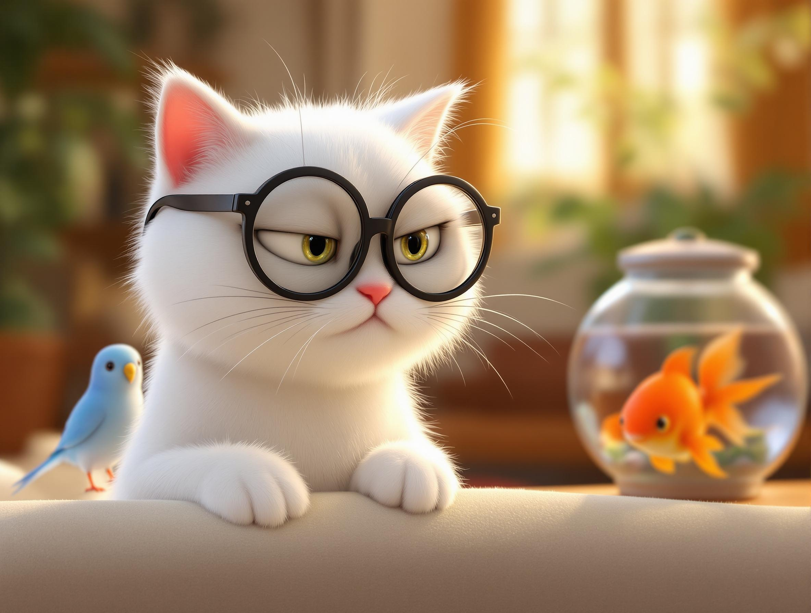

Mirco Deflorin

Limitierte Auflage
Bestellen Sie jetzt direkt ein signiertes Exemplar vom Schriftsteller Mirco Deflorin
Jetzt vorbestellen
* Limitierte Auflage von signierten Exemplaren
Noch 17 Tage bis zur
Veröffentlichung von "Alles ausser Kontrolle"

Veröffentlichung von "Alles ausser Kontrolle"
Ein ganz normaler Tag im Haushalt... bis Herr Schnurr beschliesst, dass das Sofa seiner aristokratischen Würde nicht mehr gerecht wird. Was soll Mike tun?
Wochenrückblick
Was für eine Woche! Von Herrn Schnurrs aristokratischen Morgenpflege-Ritualen bis zu Waldemars dramatischen Soap-Opera-Rezensionen - unsere Tierwelt wurde lebendig wie nie zuvor. Und Morgen? Da öffnet das Chaos-Café seine Pforten...